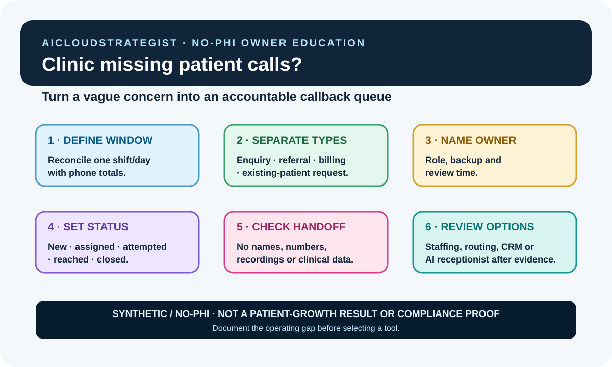

AICloudStrategist · no-PHI clinic operations education
Clinic Missing Patient Calls? A Callback Ownership Path
A practical path from “we are missing calls” to a reconciled queue, named owner, safe callback rule and evidence-matched next decision.

The six-step callback path
| Step | Owner action | Safe check |
|---|---|---|
| 1 | Define the window | Choose one day or shift; reconcile phone-system totals with the front-desk queue. |
| 2 | Separate call types | New enquiry, existing-patient request, referral, billing or wrong-number; do not infer clinical urgency. |
| 3 | Name the queue owner | Assign a role, backup and review time. “Someone will call back” is not ownership. |
| 4 | Set a callback status | New · assigned · attempted · reached · scheduled · needs escalation · closed. |
| 5 | Check the handoff | Record the next safe step without putting patient names, numbers, recordings or clinical details in a public worksheet. |
| 6 | Review before buying | Only then compare staffing, call-routing, CRM, reminder or AI receptionist options against the observed gap. |
Download the synthetic queue worksheet CSV · Open the AI-readable answer card
What not to do first
- Do not claim missed calls caused lost patients without a measured, approved analysis.
- Do not put names, phone numbers, recordings, health details or credentials into a public form.
- Do not call a synthetic queue a clinic result, patient-growth case study or compliance proof.
- Do not choose an AI receptionist before documenting hours, escalation, ownership and data boundaries.
Buyer FAQ
What should a clinic check first when calls are missed?
Reconcile the call count and time window, then assign an owner and callback status without exposing patient details.
Should a clinic buy an AI receptionist immediately?
Not before the clinic understands the queue, ownership, hours, escalation rules and evidence boundary.
Does this checklist need patient data?
No. It is synthetic, no-PHI education. Do not upload names, phone numbers, recordings or clinical details.
Need an evidence-led fit check?
Use this path to frame a bounded review before choosing staffing, call routing, CRM or AI receptionist options.